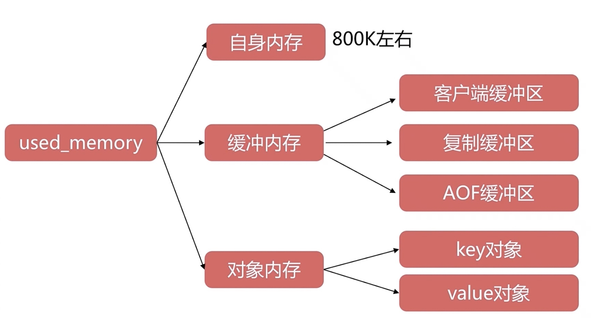
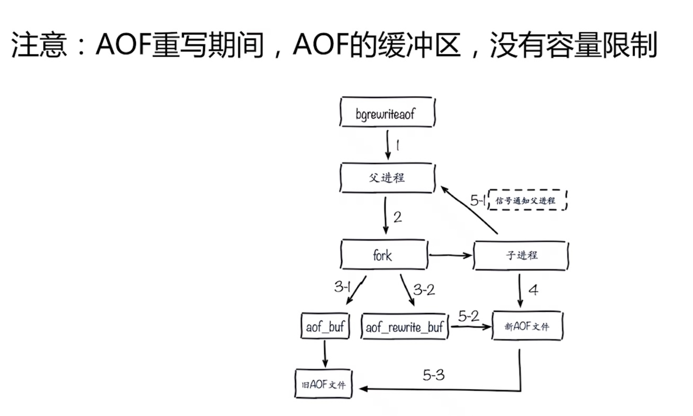
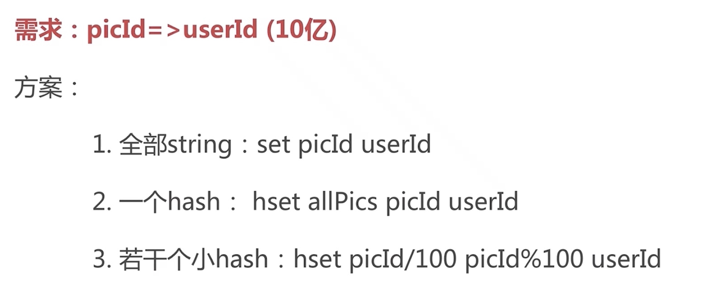

Redis内存优化
分类
- 内存消耗
- 内存管理
- 内存优化
内存消耗
#####内存使用统计

内存消耗划分

- 
客户端缓冲区
- 普通客户端
- slave客户端
- pubsub客户端
输入缓冲区

输出缓冲区
- client-output-buffer-limit
- class 缓冲区类型
- hard limit 超出会立即被关闭
- soft limit soft seconds 超出规定缓冲区多长时间会被关闭

普通客户端缓冲区
- 默认：client-output-buffer-limit normal 0 0 0
- 默认：没有限制客户端缓冲
- 注意：防止大的命令或者 monitor。

slave客户端缓冲区
- 默认: client-output-buffer-limit slave 256 mb 64 mb 60
- 阻塞：主从延迟较高，或者从节点过多
- 注意：主从网络，从节点不要超过 2 个
pubsub缓冲区
- 默认: client-output-buffer-limit pubsub 32 mb 8 mb 60
- 阻塞：生产大于消费
- 注意：根据实际场景适当调试。
- client list
- info clients
复制缓冲区

AOF缓冲区
- 
对象内存
- Key：不要过长，量大不容忽视 redis3: embstr39 字节）
- value: ziplist、Intset=等优化方式。
内存碎片
- jemalloc
- 优化方式
- 避免频繁更新操作：append、strange 等
- 安全重启，例如 Redis sentinela 和 redis clusters 等。
子进程内存消耗
- 必然存在：fork (bgsave 和 bgrewriteaof）
- 优化方式
- 去掉 THP 特性：2.6.38 增加的特性。
- 观察写入量：copy-on-wite overcommit_memory=1
内存管理


- config set maxmemory
- config rewrite
内存回收策略
删除过期键值
- 惰性删除：访诃 key-> expired dict-> del key
- 定时删除：每秒运行 10 次，采样删除。

内存溢出策略
- 超过 naxmemory 后触发相应策略，由 naxmemory- policy 控制。
- Noeviction：默认策略，不会删除任何数据，拒绝所有写入操作并返回端错误信息“(error) OOM command not allowed when used memory“此时 Redis 只响应读操作由 maxmemory- policy 控制。
- Volatile-ru：根据 LRU 算法删除设置了超时属性（expire）的键，直到腾出足够空间为止。如果没有可删除的键对象，回退到 noevictioni 策略
- Allkeys-ru：根据 LR∪算法删除犍，不管数据有没有设置超时属性，直到腾出足够空间为止
- Allkeys- random：随机删除所有键，直到腾出足够空间为止。
- Volatile- randon：随机删除过期键，直到腾出足够空间为止。
- volatile-ttl：根据键值对象的属性，删除最近将要过期数据。如果没有，回退到 noevlction 策略。
内存优化

合理选择数据结构

- 

ziplist

内存暴增案例

- 批量写入
- 主从不一致 dbsize dbsize
- redis-cli client list | grep -v "omem=0"
- 找到对应的业务方直接处理掉
- 预防
- 线上redis禁用monitor
- 适度限制缓冲区大小
- 理解monitor的原理
- cachecloud可以直接监控到
其他方法
- 不要忽视key长度
- 序列化和压缩方法
需不需要Redis
- 数据 大数据 冷数据
- 功能性 关系行 消息队列
总结
- 内存是宝贵资源。
- 结合场景选择和优化数据结构。
- 序列化是有成本的。
- 不要忽视键长度。